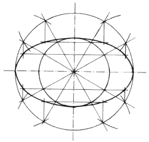
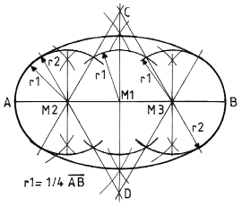

Zuerst werden vom selben Mittelpunkt aus zwei Kreise gezeichnet, die in ihrem Durchmesser mit der schmalsten und der breitesten Stelle der zu zeichnenden Ellipse übereinstimmen sollen. Nachdem der größere Kreis zwölfgeteilt wurde – man kann den Kreis auch feiner teilen –, lege man von den Schnittpunkten Senkrechte in den Zwischenraum zum inneren Kreis, und von den Schnittpunkten mit dem inneren Kreis aus waagerechte Linien nach außen hin. An den Schnittpunkten dieser Linien entlang entsteht die Kontur der Ellipse.
Zeichnerische Konstruktion eines Ovals

Im Unterschied zur Ellipse, deren Radien sich stetig ändern, besteht das Oval nur aus zwei verschiedenen Radien. Die Grundlinie A-B wird zuallererst halbiert und dann geviertelt. Früher wäre sie gevierteilt worden, aber diese Zeiten sind zum Glück vorbei! Um die dabei entstehenden Punkte, hier M1, M2 und M3, werden Bögen mit dem Radius r1 und dem gezeigten Umfang gezeichnet. Von M2 und M3 aus werden Linien durch die Schnittpunkte der drei Kreise gezogen. Dadurch erhält man die Punkte C und D. Diese sind die Mittelpunkte der großen Bögen mit dem Radius r2, die auf den jeweils gegenüberliegenden Seiten an die kleinen Radien anschließen.